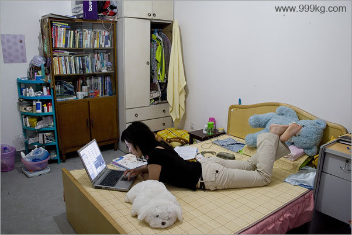
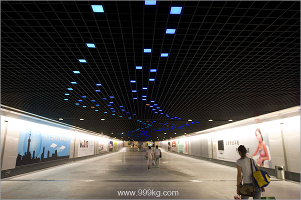
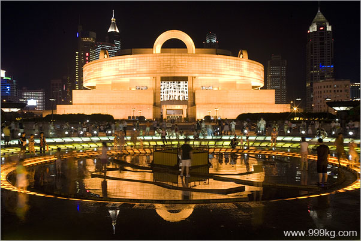
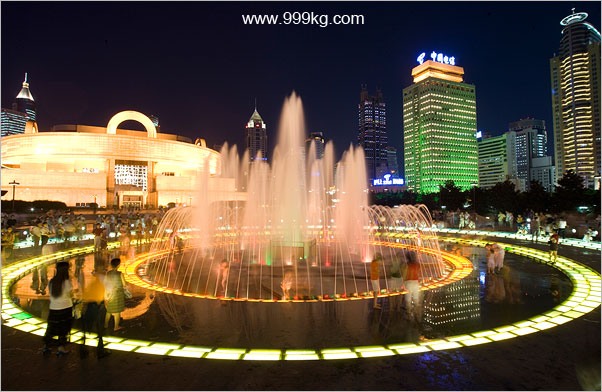
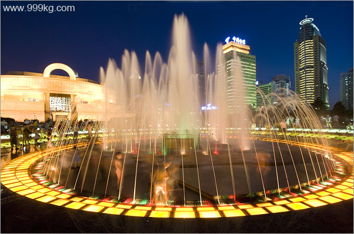
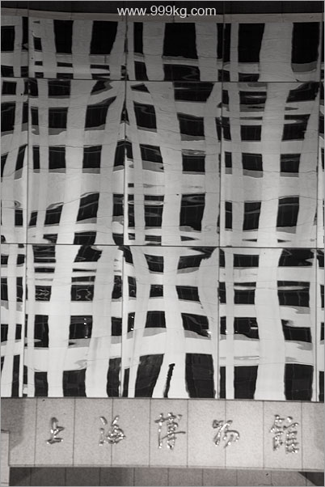
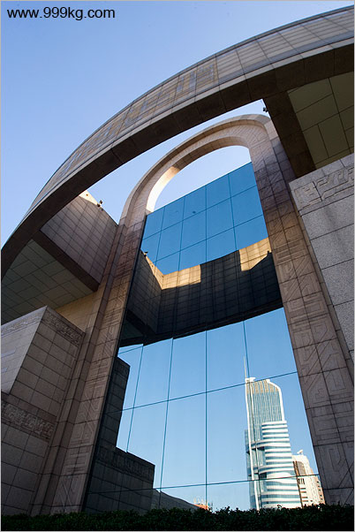

|
上海图文日记2006
2006年7月29日
我为什么走上职业摄影之路
总体来说我是一个很悲观的人。这个世界没什么活头。人类于地球，如癌细胞于生命体，须除之而后快。我们人类自从开始直立行走以来，特别是从冷兵器时代过渡到火药时代，又从火药过渡到核武器，不但自相残杀，还把别的动物杀光，把地下的石油和煤挖干，地上的树砍光。人类这个种族的确论罪当铢，应该集体自杀谢罪。如果没有人类，地球上其他的动物植物一定很高兴。
我很喜欢看星星。茫茫宇宙中地球根本什么都不是，我们个人又是地球这个什么都不是的星球上的一个什么都不是。古今将相在何方？荒冢一堆草没了，互相算计奋斗个啥？
在新加坡心情最低落的一段日子里，每天早上的报纸一来我都迫不及待的看头版头条，看看有没有什么世界性的灾难。反正我不想活了，大家一起完蛋最好。可是报纸总是让我失望。自杀我没有这个勇气，全球性的地震火山爆发小行星撞地球之类的事情看来近期不会发生，我只得继续活下去。
活下去。每天有24小时要打发。怎么办？做点自己喜欢的事情吧。
If you
don't do what you love you are not going to be good at it.
And if you are not good at it you are not going to make any money doing
it.
Donald
Trump
上面这句英文意思是：如果你做的事情自己不喜欢，你一定不会做得很好。你做得不好，那也就很难从你所做的工作里赚到钱。
一个人做自己不喜欢做的事情，不管是上班还是做生意，都会有很多麻烦事要处理，加班啊，老板啊，人事关系复杂等等。一个人做自己喜欢的事情，也会有很多麻烦事要处理。比如我现在就觉得卖图片，筹集差旅费等等很麻烦。活着横竖都是烦，为什么不去做自己喜欢做的事情？
问题是，我自己不知道自己到底喜欢干什么。我换了好几次工作了，银行职员，读研究生，坐办公室，站讲台，这些工作我都是干一行恨一行。
城市里干什么工作都不爽，我于是把希望寄托在旅行上。
2001年中的我是极其郁闷的，家里老婆吵着离婚，公司里老板也快要炒掉我。9月初在和老板一次激烈争吵之后我被强令休假三个星期。我第一次独自背着一个大包在中国北京西安庐山晃了20天。这20天的旅行没有解决任何问题，回来我更加郁闷了。
2002年3月初，我终于被迫辞职了。这一次我跑得更远，在云南和西藏一带狂奔了70天。回来后我变得比以前更加麻木。我想，也许是我疯狂得还不够。
2003年7月，我进行了我生命中最大的一次冒险，我拖着已经发福的身躯和受伤的右脚，一步一晃地登上了海拔7546米的穆士塔格峰。下山回家之后我却更加想死。
风光再美也就那样了，雪山也上到顶了，也就那样。和哈勃太空望远镜拍摄宇宙图片来看，地球的风光什么都不是。风光没指望了，那人呢？所有地方的人都是一样的。每个人都是一半天使一半魔鬼。背包走世界？如果自己心里不安静的话，旅行越多失望越大。别说走地球，就是去月球都白搭。这世界本无处可逃，除了你自己。
我有点抓狂了，到了36岁还不知道干什么好，活着干啥。
有人说，这年纪了还考虑这种问题本身就说明此人脑袋有问题，活着就好，升官发财养孩子和情人。
干啥呢？如果要说我最大的爱好，现阶段看来应该是音乐，特别是钢琴和小提琴。2004年10月我买了钢琴，练习了几个月，然后我的钢琴老师说：你在这方面没有天分，要到达自娱自乐的高级水平都还需要刻苦练习，有所成就？别做梦了。我的钢琴老师那时候也是我的女朋友，不太可能对我说谎。我于是死了这个心。小提琴基本上是个童子功，就更别指望了。
（待续）
-----------------------------------------------------------------------------------
7月29日
今天休息为主，主要是采访了王婷婷小妹。婷婷一直和我MSN电话联系，今天下午4点在锦江乐园一见，吓得我翻了一个跟斗，真是个大美人，身材尤其好，典型的长腿美女。婷婷是东北人，大学毕业后就在上海工作，是典型的上海滩新移民白领。
和婷婷一起在人民广场走了走，晚饭后来她家简短采访。婷婷是商科毕业从事销售工作，但是爱好文学创作，尤其是诗歌和散文。这在上海比较罕见，一般上海人谈论房子和钱比较多。

上海新移民白领采访纪实。图片号：shanghai729A.

上海火车南站通道。图片号：shanghai729B.

上海（人民广场）博物馆。图片号：shanghai729C.

上海博物馆喷泉。图片号：shanghai729D.

上海博物馆喷泉2。图片号：shanghai729E.

上海博物馆和市政府大楼映像。图片号：shanghai729F.

上海博物馆建筑局部。图片号：shanghai729G.
|